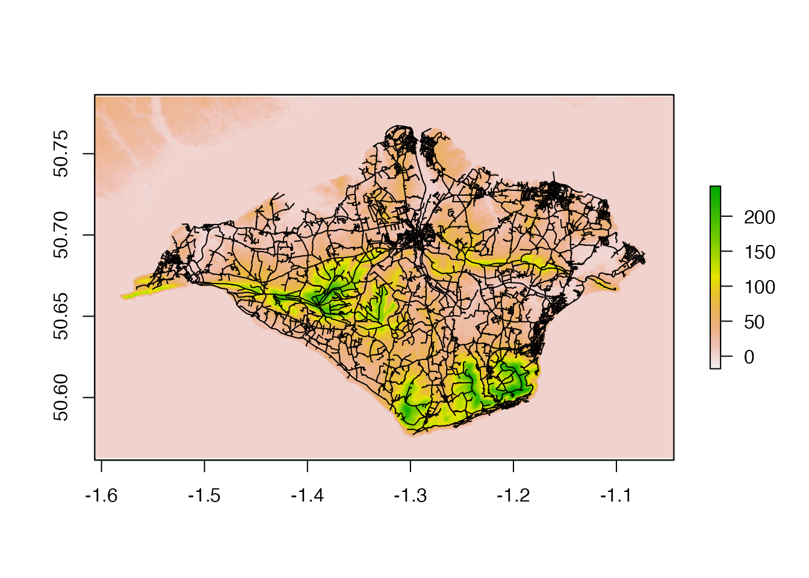

Example: gradients of a road network for a given city
Source:vignettes/roadnetworkcycling.Rmd
roadnetworkcycling.RmdAn example of the demand for data provided by the slopes package is a map showing gradients across São Paulo (Brazil, see image below), with a simplistic classification for cycling difficulty.

using slopes() to create a road network gradient for cycling for São Paulo (Brazil)
This vignette will guide through the production of an interactive slope map for a road network, using slopes, osmextract, sf, stplanr and tmap.
For the convenience of sample, we will use Isle of Wight case, with 384 km2. See Other examples below.
This will follow three steps:
- Download of road network from OpenStreetMap
- Prepare the network
- Compute slopes and export the map in html
Extract the OSM network from geofabrik
For this step you may use osmextract package which downloads the most recent information available at OSM (https://download.geofabrik.de/index.html) and converts to GeoPackage (.gpkg), the equivalent to shapefile.
# get the network
iow_osm = oe_get("Isle of Wight", provider = "geofabrik", stringsAsFactors = FALSE,
quiet = FALSE, force_download = TRUE, force_vectortranslate = TRUE) # 7 MB
#> 0...10...20...30...40...50...60...70...80...90...100 - done.
#> Reading layer `lines' from data source
#> `/private/var/folders/24/8k48jl6d249_n_qfxwsl6xvm0000gn/T/Rtmp7BGclQ/geofabrik_isle-of-wight-latest.gpkg'
#> using driver `GPKG'
#> Simple feature collection with 47639 features and 9 fields
#> Geometry type: LINESTRING
#> Dimension: XY
#> Bounding box: xmin: -5.715479 ymin: 43.35489 xmax: 1.92832 ymax: 51.16517
#> Geodetic CRS: WGS 84
# filter the major roads
iow_network = iow_osm %>%
dplyr::filter(highway %in% c('primary', "primary_link", 'secondary',"secondary_link",
'tertiary', "tertiary_link", "trunk", "trunk_link",
"residential", "cycleway", "living_street", "unclassified",
"motorway", "motorway_link", "pedestrian", "steps", "track")) #remove: "service"Clean the road network
These are optional steps that give better results, although they may slow down the process since they increase the number of segments present in the network.
Filter the unconnected segments
The rnet_group() function from stplanar package assesses the connectivity of each segment assigns a group number (similar to a clustering process). Then we may filter the main group, the one with more connected segments.
# filter unconnected roads
iow_network$group = rnet_group(iow_network)
iow_network_clean = iow_network %>% filter(group == 1) # the network with more connected segmentsBreak the segments on vertices
A very long segment will have an assigned average slope, but a very long segment can be broken into its nodes and have its own slope in each part of the segment. On one hand, we want the segments to break at their nodes. On the other hand, we don’t want artificial nodes to be created where two lines cross, in particular where they have different z levels (eg. brunels: bridges and tunnels).
The rnet_breakup_vertices from stplanr breaks the segments at their inner vertices, preserving the brunels.
iow_network_segments = rnet_breakup_vertices(iow_network_clean)In this case, there are more 1.59x segments than the original network.
Get slope values for each segment
For this case we will use slope_raster() function, to retrieve the z values from a digital elevation model. This raster was obtained from STRM NASA mission.
The SRTM (Shuttle Radar Topography Mission) NASA’s mission provides freely available worldwide DEM, with a resolution of 25 to 30m and with a vertical accuracy of 16m - more. The resolution for USA might be better.
Alternatively, COPERNICUS ESA’s mission also provides freely available DEM for all Europe, with a 25m resolution and a vertical accuracy of 7m - more.
Depending of how large is your road network, you can use slope_3d() function - this will require a valid Mapbox api key.
# Import and plot DEM
u = "https://github.com/U-Shift/Declives-RedeViaria/releases/download/0.2/IsleOfWightNASA_clip.tif"
f = basename(u)
download.file(url = u, destfile = f, mode = "wb")
dem = raster::raster(f)
# res(dem) #27m of resolution
network = iow_network_segments
library(raster)
plot(dem)
plot(sf::st_geometry(network), add = TRUE) #check if they overlay
All the required data is prepared to estimate the road segments’ gradient.
# Get the slope value for each segment (abs), using slopes package
library(slopes)
library(geodist)
network$slope = slope_raster(network, dem)
network$slope = network$slope*100 #percentage
summary(network$slope) #check the values
#> Min. 1st Qu. Median Mean 3rd Qu. Max.
#> 0.000 1.718 3.073 3.874 5.036 152.888Half of the road segments in Isle of Wight have a gradient bellow 3.1%.
We will adopt a simplistic qualitative classification for cycling effort uphill, and compare the number of segments in each class.
# Classify slopes
network$slope_class = network$slope %>%
cut(
breaks = c(0, 3, 5, 8, 10, 20, Inf),
labels = c("0-3: flat", "3-5: mild", "5-8: medium", "8-10: hard",
"10-20: extreme", ">20: impossible"),
right = F
)
round(prop.table(table(network$slope_class))*100,1)
#>
#> 0-3: flat 3-5: mild 5-8: medium 8-10: hard 10-20: extreme
#> 48.7 25.9 16.5 4.2 4.3
#> >20: impossible
#> 0.4It means that 49% of the roads are flat or almost flat (0-3%) and about 75% of the roads are easily cyclable (0-5%).
Now let us put this information on a map (see here for interactive version).
# more useful information
network$length = st_length(network)
# make an interactive map
library(tmap)
palredgreen = c("#267300", "#70A800", "#FFAA00", "#E60000", "#A80000", "#730000") #color palette
# tmap_mode("view")
tmap_options(basemaps = leaflet::providers$CartoDB.Positron) #basemap
slopemap =
tm_shape(network) +
tm_lines(
col = "slope_class",
palette = palredgreen,
lwd = 2, #line width
title.col = "Slope [%]",
popup.vars = c("Highway" = "highway",
"Length" = "length",
"Slope: " = "slope",
"Class: " = "slope_class"),
popup.format = list(digits = 1),
# id = "slope"
id = "name" #if it gets too memory consuming, delete this line
)
slopemap
#export to html
tmap_save(slopemap, "html/SlopesIoW.html")
# export information as geopackage
st_write(network, "shapefiles/SlopesIoW.gpkg", append=F)
Other examples
- São Paulo (Brazil)
- Lisbon (Portugal)
- Oporto (Portugal)
- Bristol (UK)
- Sheffield (UK)